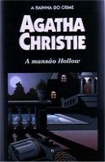

A Mansão Hollow
The Hollow
Numa magnífica casa solarenga de províncias, propriedade de um abastado aristócrata, reúne-se um grupo de pessoas da melhor sociedade inglesa, para passar um agradável final de semana. Porém, entre a “gente fina”, há quem faça coisas más e que, com muitas boas maneiras, pode cometer os piores assassinatos. Isto é o que acontece na mansão de sir Enrique Angkatell: um assassino oculta-se entre seus elegantes convidados e um deles é a sua vítima. Felizmente, também lá se encontra um homenzinho pequeno, de grandes bigodes e com um cérebro privilegiado: Trata-se do famoso detetive Hercule Poirot, que descobre o culpado e impede, na última hora, que este cometa um segundo assassinato.